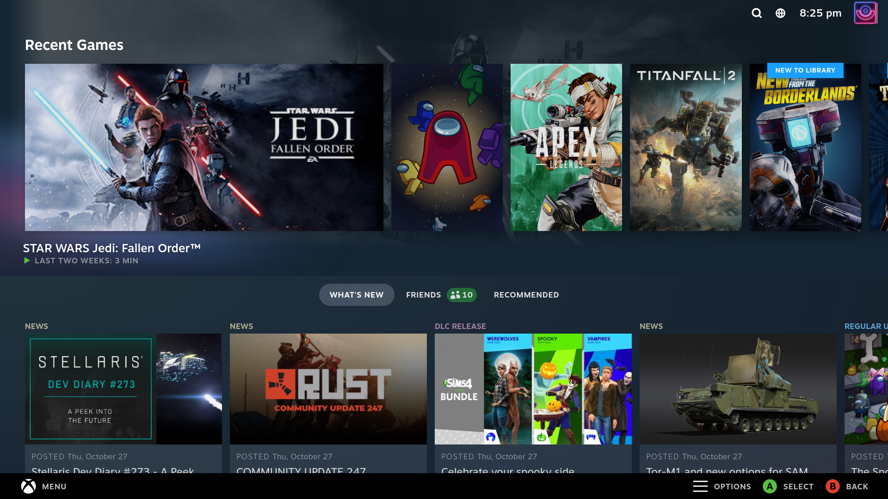

Open Ecosystems.
Community software that breathes new life into old plastic.
Optimization
Unlike factory software, community firmware is stripped of "bloatware," focusing purely on **CPU efficiency** and maximizing every minute of battery life.
Customization
From custom boot animations to granular **GPU clock control**, these systems give users the power to tune hardware for the perfect experience.
Accessibility
Modern handheld OS projects focus on **Instant-On** features, allowing gamers to suspend and resume massive titles in seconds.
The Power of Linux
The shift toward Linux-based systems like **SteamOS** has unlocked a new era of performance. By controlling the entire software stack, developers ensure that demanding AAA titles run smoothly on portable APUs.
- Proton Layer: Running Windows games natively on Linux.
- Gamescope: Advanced micro-compositor for low latency.
- Open Source: Transparent code that the community can improve.

Leading Platforms
SteamOS
The benchmark for handheld PCs, offering a console-like **Deck Verified** experience with a full desktop mode for power users.
OnionOS
The definitive retro experience for smaller devices, featuring a **Game Switcher** that makes jumping between classics instant.
Android / Lineage
The versatile choice for **Cloud Streaming** and mobile-native titles, offering the widest range of app support in the market.